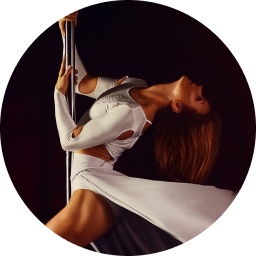

“Kad sam krenula na prvi trening, na kraj pameti mi nije bilo da ću biti…”
“There are no strangers here;
Only friends you haven’t yet met”
“Kad sam krenula na prvi trening, na kraj pameti mi nije bilo da ću biti…”
“Nije Pole Dance Fitness u temelju promijenio moj život, ali ga je svakako…”
“Zatvorite oči. Izbacite iz glave sve misli i opustite se! Tko govori instrukto…”
“Pole dance fitness je za mene jedno prekrasno iskustvo. Osim što izgra…”
“Pole dance fitness je za mene jedno prekrasno iskustvo. Osim što izgra…”
Pole Dance Fitness namijenjen je isključivo ženama i posebno prilagođen obliku ženskog tijela. U današnjem svijetu, svijetu koji diktira brzi tempo življenja, žena rastrgana između poslovnih i obiteljskih obveza često…
more…
Pole Dance Fitness – Pole Philosophy je plesni studio koji razvija i uči vještinu plesa na šipci. Ono što razlikuje naš studio od ostalih studija je naglasak na ljepoti ženskog tijela i individualni izražaj svake žene. Razvijamo i njegujemo individualni pristup svakoj našoj članici…
more…